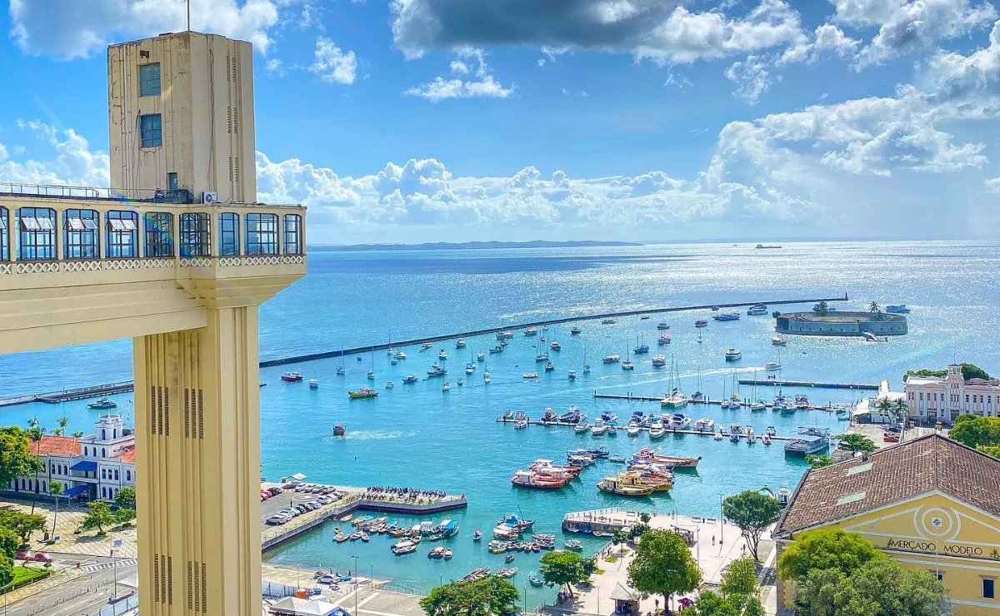
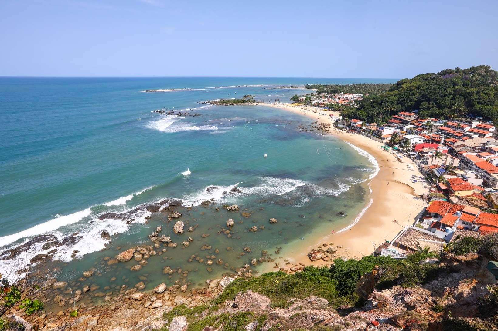

Salvador: A capital do estado, Salvador, é um destino turístico vibrante e culturalmente rico. O Pelourinho é o centro histórico da cidade e foi declarado Patrimônio Mundial pela UNESCO. Suas ruas de paralelepípedos, casarões coloridos, igrejas barrocas e praças históricas são imperdíveis. Além disso, o Mercado Modelo oferece uma variedade de artesanato e souvenirs.
Bem-vindo à Bahia


Praia do Forte: Localizada a cerca de 80 km de Salvador, a Praia do Forte é uma das praias mais famosas da Bahia. Além de suas praias paradisíacas, a região abriga o Projeto Tamar, uma iniciativa de conservação de tartarugas marinhas, onde os visitantes podem aprender sobre essas criaturas fascinantes.

Morro de São Paulo: Localizado na Ilha de Tinharé, o Morro de São Paulo é um destino popular entre os turistas. Suas praias encantadoras, como a Primeira Praia, Segunda Praia e Quarta Praia, são ideais para relaxar e desfrutar do sol. Além disso, a Fortaleza de Morro de São Paulo é uma atração histórica que oferece vistas panorâmicas deslumbrantes.

Porto Seguro: Porto Seguro é conhecida por suas praias ensolaradas, águas cristalinas e animada vida noturna. A Passarela do Álcool é um dos pontos turísticos mais populares, repleta de restaurantes, bares e lojas. O local também abriga o famoso Complexo de Lazer Axé Moi, onde ocorrem grandes festas e shows.